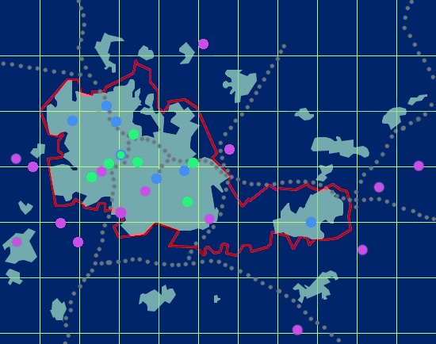

Positioning your mouse pointer on a site location on the map will cause the site name to appear in a temporary boxed label. By moving the mouse pointer from the inside of the circle to outside of its circumference, you should make the site exact longitude and latitude appear in your browser status box (at the bottom of your Web window).
Clicking on the site location on the map will lead you to a summary of the data collected at the site and a link to the archive directory where the data are stored. For a more extensive description of the data, please refer to the documentation relative to PUMA. To view the names and longitude/latitude coordinates of PUMA sites sorted by alphabetic order, please refer to the PUMA Sites List.
| Note: | Loughton and Wenlock are West of the map. |
| Meon Hill is South of the map. |
|
L A T I T U D E (deg) |
52.7 |  |
|
|||||||||||||
|---|---|---|---|---|---|---|---|---|---|---|---|---|---|---|---|---|
| 52.5 | ||||||||||||||||
| 52.3 | ||||||||||||||||
| -2.2 | -2.0 | -1.8 | -1.6 | -1.4 | ||||||||||||
| LONGITUDE (deg) | ||||||||||||||||